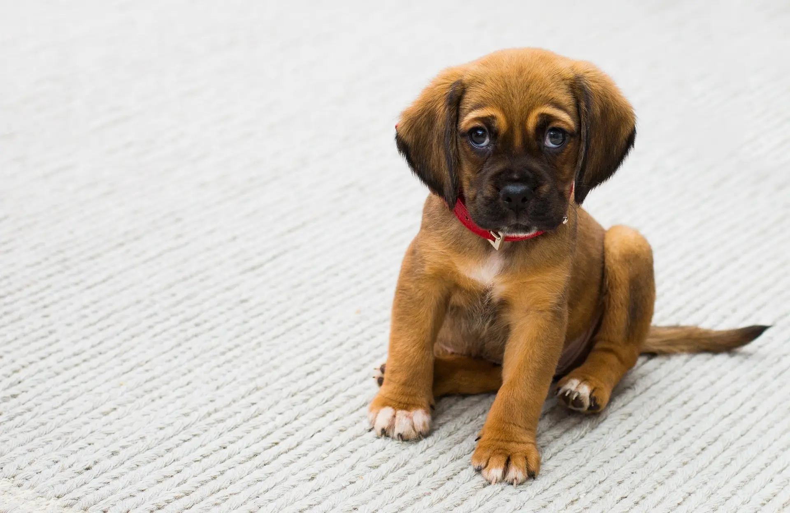
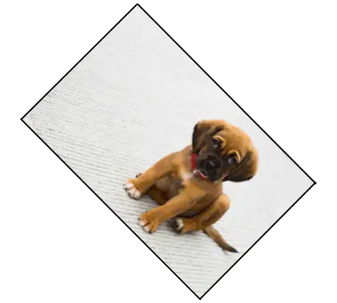

Ejercicio de prueba:


A continuación, tienes la información relevante de la imagen:
Reduzca la resolución de la imagen a 360px de ancho sin perder la proporción de la imagen con Photopea.
Gire la imagen reducida 45 grados usando la página de Photopea y guárdala en formato ".png", luego conviertala en ".webp" con Squoosh.
